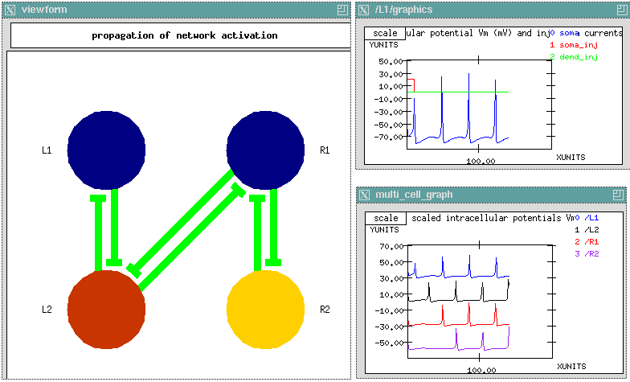

Return to the main page
Return to the main page
Small networks of neurons are studied with a simulation based on central pattern generator circuits. This tutorial, CPG, was developed by Sharon Crook, and is described in Chapter 8 of The Book of GENESIS (Crook and Cohen 1994). It uses a network of four coupled neurons to explore the properties of coupled oscillators and the various firing patterns that may be produced as the synaptic coupling between neurons is varied.

The interactive cell connection diagram and plots for the CPG tutorial. Menus appropriate to a given cell or connection may be displayed by clicking on the network display at the left, or by clicking on various buttons which appear elsewhere on the simulation screen. These allow one to change most of the relevant parameters for the simulation. The network display uses color to indicate whether connections are excitatory or inhibitory. In addition, the cell color changes to represent the variation in membrane potential with time.
In the example shown here, the network has been configured as a chain of four cells with mutually excitatory connections of equal strength. A 10 msec current injection pulse of 0.2 nA was applied to the soma of cell L1. The display shows the resulting traveling wave of activation after 144msec of simulation time. This simulation may also be used to generate the multiple patterns of activity which correspond to different gaits of four-footed animals.